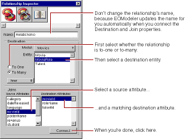
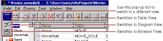
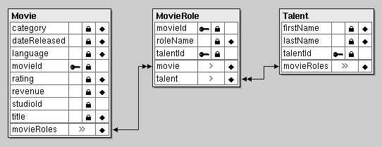

-
Select the Movie entity.
The right frame of the Model Editor shows the Movie's relationships as well as its attributes.
Your model's Movie entity might have a different name than the toMovieRole relationship shown above. That's because the wizard created your relationship, and the relationship's name is dependent on the adaptor the wizard used. Adaptors don't all have the same naming convention for to-many relationships. For example, the Oracle adaptor names Movie's relationship movieRoleArray instead of toMovieRole.
If your Movie entity doesn't have a toMovieRole relationship, it means that the database server's schema information for your database didn't have enough information for the wizard to create them. You need to create them by hand now. The next several steps explain how.
-
Choose Property
 Add Relationship.
Add Relationship.
A new relationship named "Relationship" is added in the table view at the bottom of the Model Editor. The new relationship is already selected.
-
With the relationship selected in the right frame of the Model Editor, click the button (in the toolbar) to inspect the relationship.

-
In the Inspector, select the To Many option.
-
Select MovieRole as the destination entity.
-
Select movieId in the Source Attributes list.
-
Select movieId in the Destination Attributes list.
-
Click Connect.
EOModeler automatically renames the relationship based on the name of the destination entity. For example, after connecting a to-many relationship from Movie to MovieRole, EOModeler names the relationship "toMovieRole." To-one relationships are named with the singular form of the destination entity's name. For example, EOModeler names the inverse to-one relationship (from MovieRole to Movie) "toMovie."
If the wizard created your relationship and used a name other than "toMovieRole," consider renaming the relationship. The rest of this tutorial assumes that your relationships are named using EOModeler's naming convention.
-
Repeat the steps above to create the following relationships (if they do not already exist):
A to-one relationship named "toMovie" in the MovieRole entity where:
-
The destination entity is Movie.
-
The source attribute is movieId.
-
The destination attribute is movieId.
A to-one relationship named "toTalent" in the MovieRole entity where:
-
The destination entity is Talent.
-
The source attribute is talentId.
-
The destination attribute is talentId.
A to-many relationship named "toMovieRole" in the Talent entity where:
-
The destination entity is MovieRole.
-
The source attribute is talentId.
-
The destination attribute is talentId.
-
Choose in the toolbar pop-up list to switch the Model Editor to Diagram View.

At this point your model has all the relationships it needs. The Diagram View gives you an overview of the entities in the model and their relationships to other entities.

You can also use the Diagram View to edit your model. Double-click an attribute or relationship to change its name. To create a relationship and its inverse, Control-drag from the relationship's source attribute to its destination attribute.